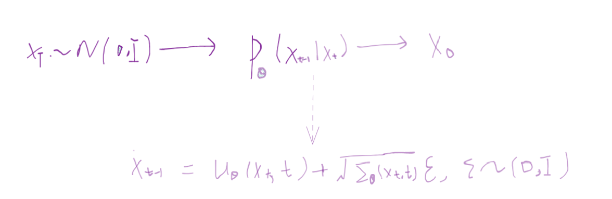
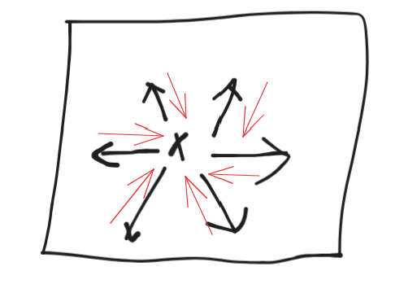
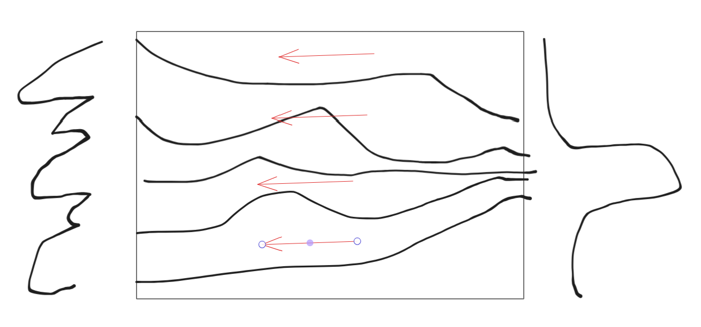

1 离散扩散和VAE
表面上看DDPM和VAE很类似？
VAE的loss写作
\(\mathcal{L}(\theta, \phi; x, z) = \mathbb{E}_{q_\phi(z|x)}[\log p_\theta(x|z)] - D_{KL}(q_\phi(z|x) \| p(z))\)
包含KL loss和reconstruction loss
VAE是把图像编码到高斯噪声(KL loss)，再从高斯噪声解码到图像(重建loss)
但是VAE本质上是属于高斯混合模型，如果可以的话，这个模型也想采样更复杂的z！(详细理解可以看之前的VAE文章)
而DDPM主要是定义了一个transformation，这个transformation是一条langvein MCMC，能把输入的随机变量真正变到高斯分布，这个离散过程对应着一个SDE，然后逆向过程也对应着一个逆SDE，这个逆向SDE以类似的方式收敛到图像分布，从而能够在逆向阶段(reverse process)产生图像样本(sample )
DDPM的最大的优点在哪呢？我不需要去考虑这个复杂的后验分布\(p(z|x)\)了，因为我直接变换到一个简单的分布，并且全部专注在如何做生成上，当然缺点也有，这个简单分布不像后验分布一样具有表征(representation learning)的意义
2 如何理解离散扩散
DPM的原理是，定义了一条马尔科夫链：
马尔科夫链的角度看联合分布，联合分布等于链开始的节点概率乘一堆条件概率,
\(q(x^{(0...T)}) = q(x^{(0)}) \prod_{t=1}^T q(x^{(t)}|x^{(t-1)})\)
对连续扩散过程而言，step size足够小的时候，\(q(x^{(t)}|x^{(t-1)})\)作为转移核，当转移核是高斯分布时，该马尔科夫链的稳态分布也是高斯分布
当然这些说的都是概率，我们更关心的是样本
DPM运用的前向概率transformation和反向产生样本的方法是祖先采样：即利用前一次采样结果的分布数据来生成这一次的采样结果，走完这条马尔科夫链就是采样出最终的数据分布。
这里参考1的推导
\(\begin{aligned} q(\mathbf{x}_{t-1} \vert \mathbf{x}_t, \mathbf{x}_0) &= q(\mathbf{x}_t \vert \mathbf{x}_{t-1}, \mathbf{x}_0) \frac{ q(\mathbf{x}_{t-1} \vert \mathbf{x}_0) }{ q(\mathbf{x}_t \vert \mathbf{x}_0) } \\ &\propto \exp \Big(-\frac{1}{2} \big(\frac{(\mathbf{x}_t - \sqrt{\alpha_t} \mathbf{x}_{t-1})^2}{\beta_t} + \frac{(\mathbf{x}_{t-1} - \sqrt{\bar{\alpha}_{t-1}} \mathbf{x}_0)^2}{1-\bar{\alpha}_{t-1}} - \frac{(\mathbf{x}_t - \sqrt{\bar{\alpha}_t} \mathbf{x}_0)^2}{1-\bar{\alpha}_t} \big) \Big) \\ &= \exp \Big(-\frac{1}{2} \big(\frac{\mathbf{x}_t^2 - 2\sqrt{\alpha_t} \mathbf{x}_t \color{blue}{\mathbf{x}_{t-1}} \color{black}{+ \alpha_t} \color{red}{\mathbf{x}_{t-1}^2} }{\beta_t} + \frac{ \color{red}{\mathbf{x}_{t-1}^2} \color{black}{- 2 \sqrt{\bar{\alpha}_{t-1}} \mathbf{x}_0} \color{blue}{\mathbf{x}_{t-1}} \color{black}{+ \bar{\alpha}_{t-1} \mathbf{x}_0^2} }{1-\bar{\alpha}_{t-1}} - \frac{(\mathbf{x}_t - \sqrt{\bar{\alpha}_t} \mathbf{x}_0)^2}{1-\bar{\alpha}_t} \big) \Big) \\ &= \exp\Big( -\frac{1}{2} \big( \color{red}{(\frac{\alpha_t}{\beta_t} + \frac{1}{1 - \bar{\alpha}_{t-1}})} \mathbf{x}_{t-1}^2 - \color{blue}{(\frac{2\sqrt{\alpha_t}}{\beta_t} \mathbf{x}_t + \frac{2\sqrt{\bar{\alpha}_{t-1}}}{1 - \bar{\alpha}_{t-1}} \mathbf{x}_0)} \mathbf{x}_{t-1} \color{black}{ + C(\mathbf{x}_t, \mathbf{x}_0) \big) \Big)} \end{aligned}\)
利用前向的\(p(x_t|x_0)\)的分布，预估出一个\(\mathbf{x}_0 = \frac{1}{\sqrt{\bar{\alpha}_t}}(\mathbf{x}_t - \sqrt{1 - \bar{\alpha}_t}\boldsymbol{\epsilon}_t)\)
最终得到的参数化的目标为：\(\begin{aligned} \boldsymbol{\mu}_\theta(\mathbf{x}_t, t) &= \color{cyan}{\frac{1}{\sqrt{\alpha_t}} \Big( \mathbf{x}_t - \frac{1 - \alpha_t}{\sqrt{1 - \bar{\alpha}_t}} \boldsymbol{\epsilon}_\theta(\mathbf{x}_t, t) \Big)} \\ \text{Thus }\mathbf{x}_{t-1} &= \mathcal{N}(\mathbf{x}_{t-1}; \frac{1}{\sqrt{\alpha_t}} \Big( \mathbf{x}_t - \frac{1 - \alpha_t}{\sqrt{1 - \bar{\alpha}_t}} \boldsymbol{\epsilon}_\theta(\mathbf{x}_t, t) \Big), \boldsymbol{\Sigma}_\theta(\mathbf{x}_t, t)) \end{aligned}\)
推导的这里写的比较模糊，具体的可以详细看看参考[], 本文的重点是给出离散DDPM的动机以及直观解释。公式推导也不是难点☻

3 DDPM比DPM的改进点
4 QA
几个QA：
为什么学到了x_0到x_t的噪声不能用这个噪声直接得到原图？？
回答：因为本质上要做分布的transformation
假设你手头现在就一张图片，加上噪声，送进网络学到了这个噪声，那你反向怎么做？直接减去这个噪声？这样的话你只是得到了原始的图像，但是并不是在做生成！真正的生成是要你从\(p(x_0|x_1)\)这个分布里采样，这个采样要怎么做？\(p(x_0|x_1) = \frac{p(x_1|x_0)p(x_0)}{p(x_1)}\) ok \(p(x_0)\)我们不知道，没法做。用前面学到的噪声不是从这个分布采样，顶多是记住了前向加的噪声，能还原到原始的\(x_0\)那一个点，而不是分布里采样得到的
扩散模型加噪音改为渐变成纯色(纯黑或白、灰)还有效果吗
变成纯黑或者纯白，意味着网络在生成的时候接受一样的输入，这样网络倾向于输出每个label的平均值(这样loss最小)，生成效果会不好。 从分布的映射角度思考会更好，最好输入是一个随机的分布，然后靠算法实现分布的transformation
- 为什么reverse process的时候不是学的单步噪声，为什么实际网络训练的时候直接学一个\(x_0\)到任意\(x_t\)的多样的的噪声
学这个跨步噪声一方面公式推出来是这个样子，另一方面因为我们在计算时为了计算后验分布引入了\(x_0\)这个条件，不学单步噪声是因为没意义，我们要做的是分布的transformation。这里我们反复强调了分布的transformation，因为generative Model最终的就是如何拟合概率和如何进行sample！
一点民科的想法：
去噪有点像在一个大的流形学习数据在哪里

image-20240618131122259 图中黑色是加噪(往外走) 红色是往回走，是网络要学的部分
而扩散更像是走路，在正向的基础上，反向的时候沿着某个梯度走

image-20240618131607952 扩散真正训练起来和去噪非常像，加了各种尺度的噪声
去噪加朗之万采样 <==> sm加朗之万采样 <=> 扩散模型
虽然从扩散的角度其实是为了做 transform ，实现反向马尔可夫链每一步的采样，但是底层的逻辑还是去学那个数据梯度，这点 sm 和去噪，扩散，跑着殊途同归
- 判断一个生成模型的好坏，可以从以下三点看：
- 采样是否迅速？
- 模型生成结果的多样性是否充足？
- 生成样本是否高质量？
下一篇会讲SDE视角下的连续时间扩散模型
最后，多读读原论文和代码，“只接受二手知识就跟只抽二手烟差不多”，而我这文章可能算是四手烟了都，看多了容易呛着
参考：
[1] https://lilianweng.github.io/posts/2021-07-11-diffusion-models/
[2] Jascha Sohl-Dickstein, Eric A. Weiss, Niru Maheswaranathan, and Surya Ganguli. Deep unsupervised learning using nonequilibrium thermodynamics. 2015. arXiv:1503.03585
[3] Calvin Luo. Understanding diffusion models: a unified perspective. 2022. arXiv:2208.11970.
[4] Jonathan Ho, Ajay Jain, and Pieter Abbeel. Denoising diffusion probabilistic models. 2020. arXiv:2006.11239.